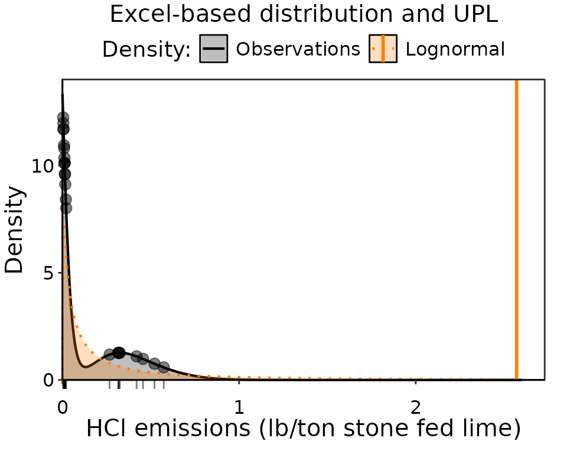
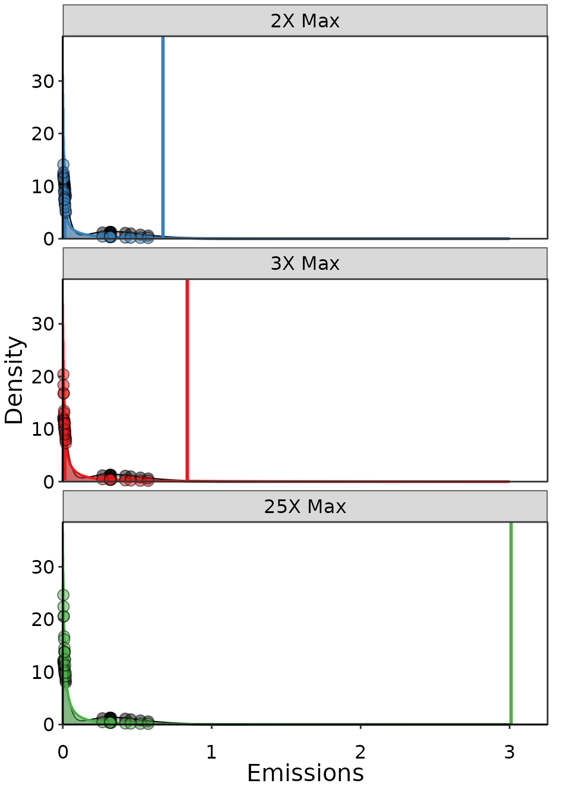
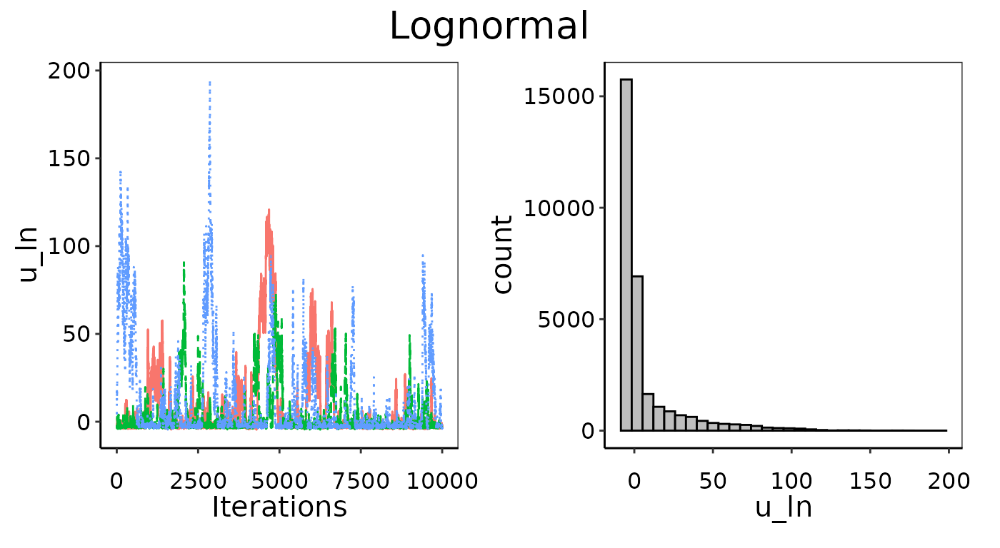
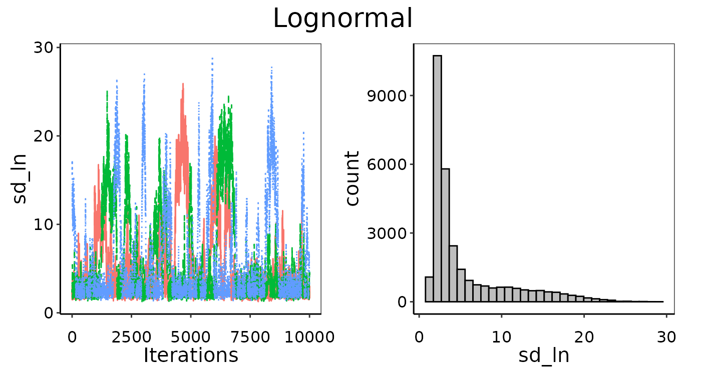
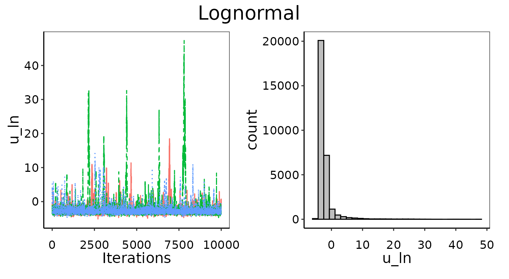
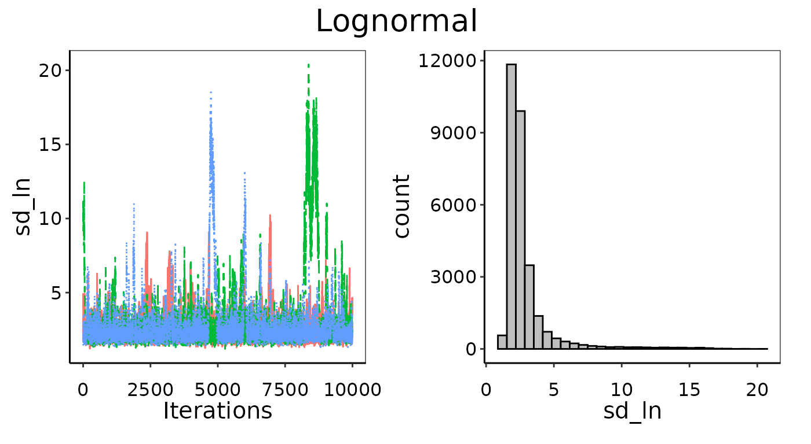
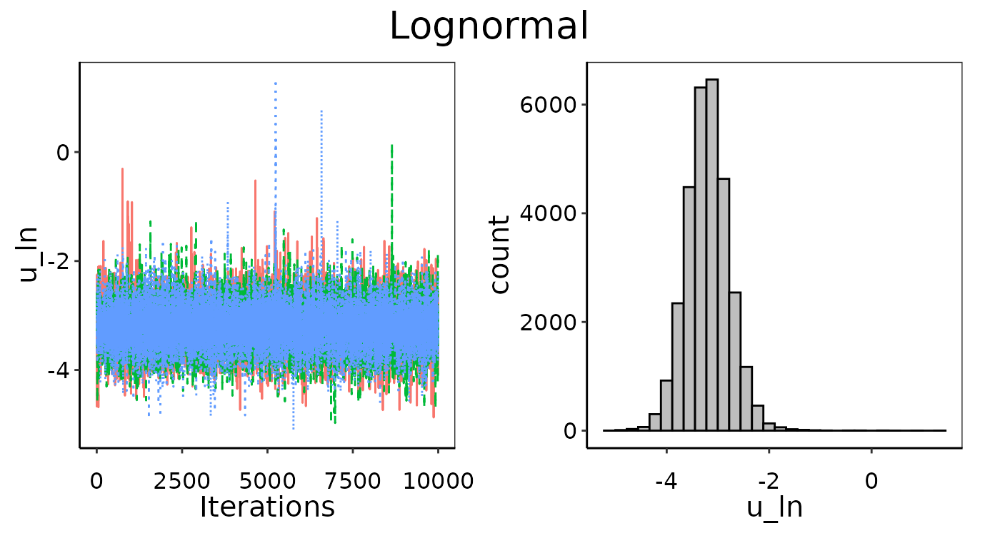
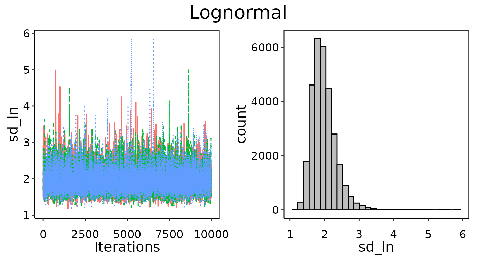
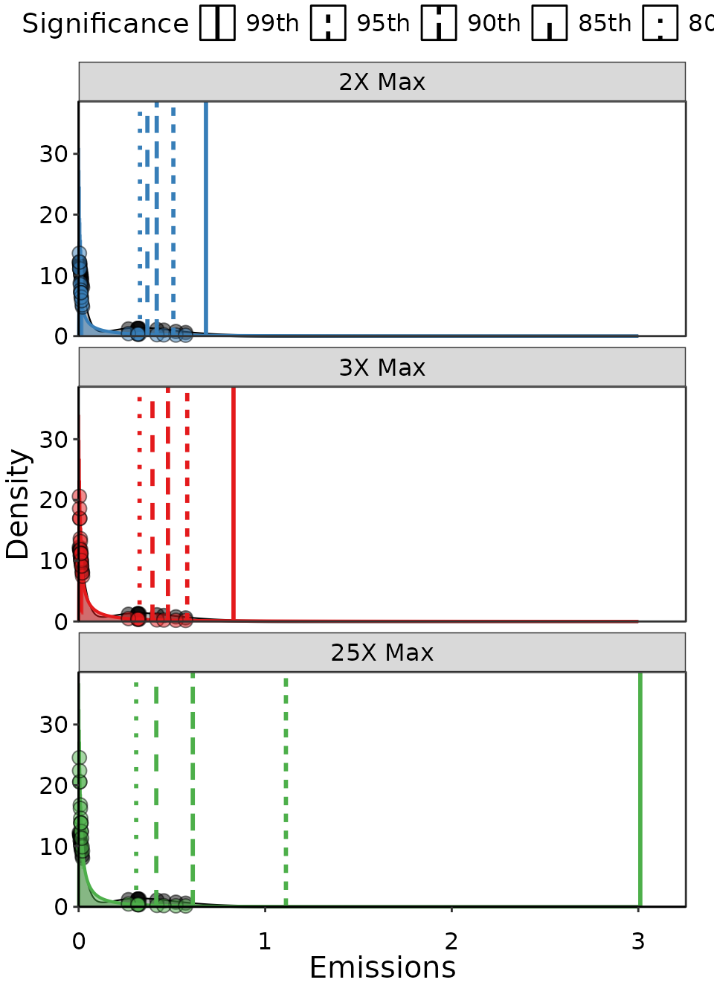
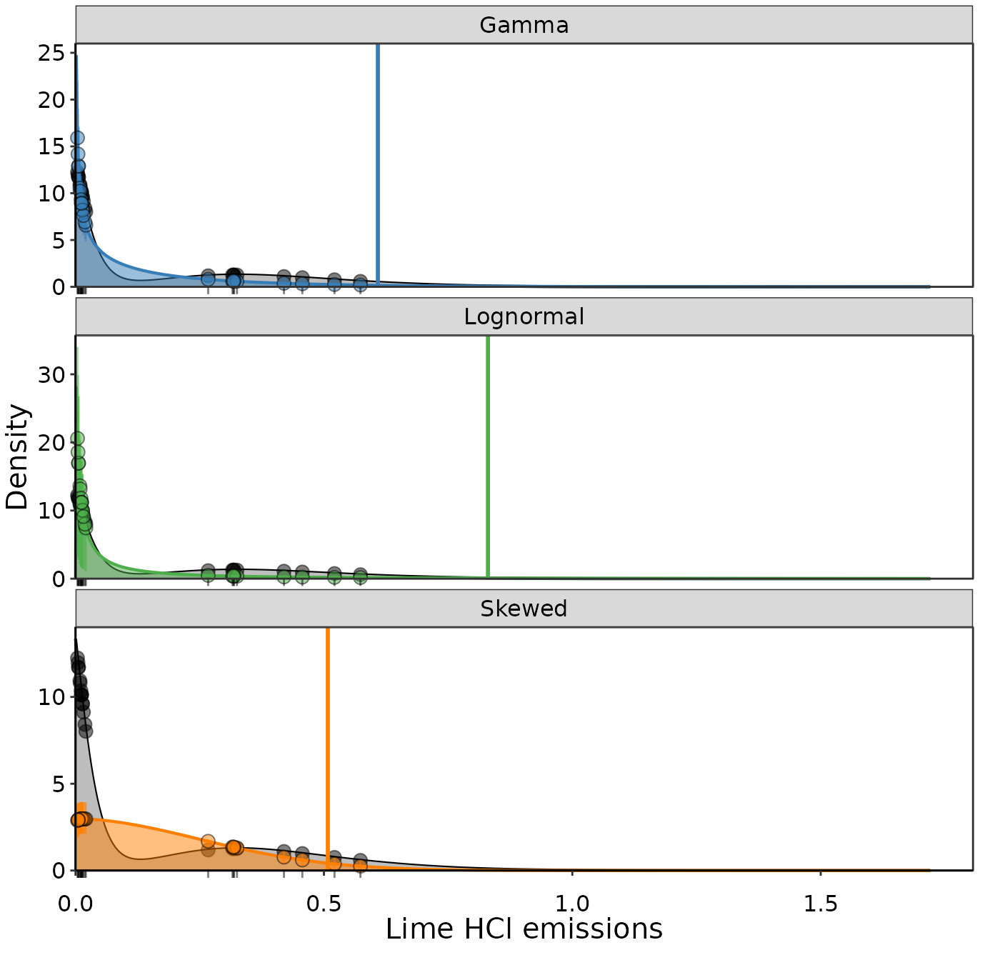

Introduction
Picking a probability distribution to represent your emissions data
is a necessary step to calculating a UPL, regardless of the method you
use or any other parameters you change. If you are using the frequentist
methods behind Normal_UPL(), Lognormal_UPL(),
and Skewed_UPL(), than you are picking the distribution
based on ratios of skewness and kurtosis and it is explicitly assumed to
be correct in the UPL calculations. If you are using the
Bayesian_UPL() method, then you can compare as many
distributions as you like and choose the best based on quantitative and
qualitative comparisons to the actual observation density. At the
moment, the UPLforOAR package supports Beta, Gamma,
Lognormal, Normal, and Skewed for Bayesian_UPL(). However,
there are many more distributions already supported in R and JAGS (also
known as BUGS, a slightly different version of the same software). This
vignette describes the supported distributions and links to resources
for more that can be included in future development as needed. Much of
the content on distributions comes from either BUGS
documentation or the reference book “Bayesian Models: A Statistical
Primer for Ecologists” by N. Thompson Hobbs and Mevin B. Hooten,
Princeton University Press 2015.
Beta
The Beta distribution models random variables that can only take on values between 0 and 1. It is often used for probabilities and proportions, and is a good choice to consider for emissions variables that are represented as destruction or removal efficiencies. The probability density, , of Beta distributed emissions, , is dependent on parameters and :
Note that in this case is the gamma function not the Gamma probability distribution. Using moment-matching, you can calculate the mean and variance of the Beta distribution as:
The parameters and can be positive and negative, though shouldn’t be able to take on values below -1. In JAGS the distribution is defined as .
Gamma
The Gamma distribution is very useful for emissions data because it represents strictly positive skewed continuous data. The probability density, , of Gamma distributed emissions, , is dependent on parameters , the shape, and , the rate:
Note that in this case is the gamma function not the Gamma probability distribution. Both the shape and rate must be positive real numbers. Using moment-matching, you can calculate the mean and variance of the Gamma distribution as:
In JAGS the distribution is defined as .
Lognormal
If a variable is Normally distributed, then is Lognormally distributed. If a variable is Lognormally distributed, than a variable is Normally distributed. The product of large numbers of random variables is Lognormally distributed regardless of the distributions of the individual variables. It is often used to model growth or products of states or parameters. It is continuous and strictly positive, and can be asymmetric, which can be well suited to describe emissions data. The probability for the Lognormal distribution is dependent on parameters , the mean of and , the standard deviation of :
Using moment-matching, you can calculate the mean and variance of the Lognormal distribution as:
Note that the variance and mean are interdependent, which makes the
Lognormal particularly useful in cases where the variance of the data
increases with the mean. In JAGS the distribution is defined as
.
Note that rather than variance like R uses, JAGS takes the precision as
the second input. There is no analytical solution for the arithmetic
mean of future samples from the Lognormal distribution, so the UPL has
to be calculated using an approximation in Lognormal_UPL()
based on Gram-Charlier Series-A expansion (for more details see “An
upper prediction limit for the arithmetic mean of a lognormal random
variable” by Dulal Kumar Bhaumik and Robert David Gibbons, 2004.). Using
the Bayesian methods in Bayesian_UPL(), the UPL can be
calculated the same as it would be for any distribution; by drawing the
future samples from the posterior distributions. Given that the
Lognormal distribution is often heavy-tailed, and that the
99th UPL is by definition going to be in that tail, the
distribution will often need to be truncated by some upper bound such
that emissions beyond it unreasonable to consider. See the section below
on heavy and long tailed distributions for more information.
Normal
The Normal distribution applies to continuous random variables across the entire number line, and has been widely used in statistics because it has properties allowing many results to be derived analytically. In addition, because the sum of a large number of samples from any distribution will be normally distributed, there are many situations it is suited to. However, the Normal distribution is not often a good choice for emissions data, which tend not to be symmetric, are strictly positive, and the variance is often related to the mean. The probability density, , of Normally distributed emissions, , is dependent on parameters , the mean, and , the standard deviation:
In JAGS the distribution is defined as
.
Note that rather than variance like R uses, JAGS takes the precision as
the second input. Since the mean and variance can be solved for
analytically, Normal_UPL() uses these fixed-point estimates
to calculate the UPL based on the desired number of future samples and
significance. The Bayesian method employed in
Bayesian_UPL() will arrive at the same estimates of mean,
variance, and UPL, but will incorporate uncertainty in the mean and
variance and offers more ways to evaluate if the Normal distribution is
the best choice to represent the data.
Skewed
The Skewed or skew-normal distribution is a generalization of the Normal distribution that allows for skewness. As such, it also exists the entire number line, but it is not symmetric. The Skew-normal distribution is defined by three parameters; location , scale , and skewness . This is equivalent to a Normal distribution when , it is right-skewed if , and left-skewed if . The probability density, , of Skewed distributed emissions is:
Where is the standard normal probability distribution, is its cumulative probability distribution function, and is transformed to . Using the error function, this can be expanded to:
Unlike the Normal distribution, there is no closed-form expression
for
,
,
and
.
The method of moments can be used for approximations when sample
skewness is not too large, which is useful for determining initial
values for MCMC chains for these parameters, but not as a solution for
parameterization. Since there is no analytical solution, the approach in
Skewed_UPL() uses iterative shifting of the
t-statistic until the desired significance is achieved.
The Skew-normal distribution is not included in JAGS, but it is in R
via the sn package. However, any distribution can be coded
manually in JAGS by using the ‘zero poisson’ method.
This approach is equivalent to any standard distribution in how the
parameters are solved for using MCMC and posterior distributions are
returned. The main difference in implementation is that for the standard
distributions already defined in JAGS, we can draw the ‘future’ samples
and probability density at any emission observation value from within
JAGS, whereas with a manually defined distribution like Skew-normal we
need to use the posterior distributions of
,
,
and
to define the probability density in R using sn::dsn() and
take those future draws using sample(). There is no
difference in results either way as long as we are controlling for
stochasticity.
Long- and Heavy-Tailed Distributions
Some probability distributions, for example some Lognormal, can have long or heavy tails. This means that there is some tiny probability of extreme values that can occur, and the range of these extreme values, i.e. the tail, can be very long. Where exactly the tail ends is quite uncertain because we usually don’t have any data supporting the probability estimates along these tails. The vast majority of the probability and emission values are in the body of the distribution, which is well supported by the parameter estimates and data. To put it another way, you can have very similar mean and standard deviations defining two Lognormal distributions, and the bulk of their probability density curves will be very similar, but the extent of the tails might be quite different. Furthermore, any method that involves a stochastic component in solving for parameters (for example MCMC in JAGS) can end up with very different extents of the tails due to randomness, rather than as a result of process or data. While we can control the randomness to have exactly reproducible results, we still want the stochastic component of any Bayesian method to be minuscule in its contribution to the final result.
This matters quite a lot when the UPL is the 99th
percentile of a long-tailed distribution, because it is going to be
within that tail. The UPL of a long-tailed distribution, whether it’s
solved for using Bayesian_UPL() or
Lognormal_UPL(), can end up being unrealistically large.
Sometimes the 99th percentile of a long-tailed distribution
will be past the range of all emissions data, not just the top
performers used to calculate the UPL, and sometimes it might be beyond
what is physically possible. These are obvious situations where the UPL
of such a long-tailed distribution should not be used, and either a
different distribution should be used or measures should be taken to
truncate the tail to physically reasonable bounds. This is done by
default in Bayesian_UPL() with an upper limit of 3 times
the maximum emissions value in the training data, but can be adjusted by
setting maxY. Any distribution that does not have an
unsupported long-tail will be unaffected by this setting.
Example
Let’s look at an example using HCl emissions from Lime processing. First we will load the data and use the Excel workbook methods to pick a distribution and calculate the UPL.
dat_emiss = read.csv("Example_data1.csv")
distr_choice = distribution_type(data = dat_emiss)
UPL_excel = Lognormal_UPL(data = dat_emiss)The emissions are a Lognormal distribution with a corresponding UPL of 2.57 (Lb/ton of stone fed Lime). Next we will plot the density of the emission observations along with the corresponding Lognormal probability density distribution to see how it looks.
ggplot()+
geom_line(data = obs_den_df, size=0.75,
aes(y = ydens, x = x_hat, color = 'a'))+
geom_area(data = obs_den_df, alpha=0.25,
aes(y = ydens, x = x_hat, fill = 'a'))+
geom_point(aes(y = ydens, x = emissions), data = Obs_onPoint,
size = 3, alpha = 0.5, shape = 19, color = 'black')+
geom_line(aes(y = pdf_ln, x = x_hat, color = 'c'),
data = pred_dat, size = 0.75, linetype = 3)+
geom_area(aes(y = pdf_ln, x = x_hat, fill = 'c'), alpha = 0.25,
data = pred_dat)+
ylab("Density")+xlab("HCl emissions (lb/ton stone fed lime)")+
ggtitle("Excel-based distribution and UPL")+
pop_distr_theme()+
geom_vline(aes(xintercept = UPL_excel, color = 'c'),
linewidth = 1, linetype = 1)+
scale_x_continuous(expand = expansion(mult = c(0, 0.05)))+
scale_y_continuous(expand = expansion(mult = c(0, 0.05)))+
coord_cartesian(clip = 'off')+
labs(color = 'Density:', fill = 'Density:')+
geom_rug(sides = 'b', aes(x = emissions), data = dat_emiss,
alpha = 0.5, outside = TRUE, color = 'black')+
scale_color_manual(values = c('black', '#FF7F00'),
labels = c('Observations', 'Lognormal'))+
scale_fill_manual(values = c('black', '#FF7F00'),
labels = c('Observations', 'Lognormal'))
Observation density of HCl emissions. The obseration data are indicated in black as points and a rug along the axis, with the observation density distribution as a black line. The fitted lognormal distribution that is the basis of the UPL estimate is colored orange. The UPL result is the vertical orange line.
It is clear why the distribution is Lognormal over Normal or Skewed, since is a high density of very low emissions near zero that needs to be accommodated by the probability density distribution. However, it has a very long tail that results in an unreasonably large UPL that is 4.5 times larger than the largest emission. Instead, we will use a Bayesian approach that can do a better job representing the emissions.
Again with Bayes
Normally we would investigate multiple distributions because it is
possible that a Gamma or a Beta might be better than the Lognormal and
not have such a long tail. But for the sake of demonstrating how the
tail affects the UPL, we will stick with the Lognormal. The methods in
Bayesian_UPL() allow you to set a value at which to
truncate the upper limit of emission probabilities, called
maxY. By default, this is
3*max(data$emissions). We will also look setting
maxY to 2*max(data$emissions) and
25*max(data$emissions) to see how the UPL estimate
changes.
results_3X = Bayesian_UPL(distr_list = c("Lognormal"), data = dat_emiss,
xvals = seq(0, 3, length.out = 1000))
results_2X = Bayesian_UPL(distr_list = c("Lognormal"), data = dat_emiss,
maxY = 2*max(dat_emiss$emissions),
xvals = seq(0, 3, length.out = 1000))
results_25X = Bayesian_UPL(distr_list = c("Lognormal"), data = dat_emiss,
maxY = 25*max(dat_emiss$emissions),
xvals = seq(0, 3, length.out = 1000))
Example of three Lognormal distributions fit to the same data, but with different maximum emission thresholds.
Clearly, the longer the tail the larger the UPL: when the tail limit increases from 1.15, to 1.72, and then 5.74 we get UPL estimates of 0.68, 0.83, and 3.01. However, not all of these results are equal in terms of performance.
Let’s look at the results from fit_likelihood() to
evaluate which distribution did a better job representing the actual
observations. The distribution with the lowest upper limit of 1.15 did
the best at actually fitting the data: it has the lowest SSE and the
most observations within the 95% CI around predicted probability
densities. The next higher limit had as many observations in agreement
but a higher SSE. Lastly, the distribution with an extremely high upper
limit that is unlikely to cause any truncation of probabilities, has the
worst fit in terms of substantially higher SSE and more than half of the
observations are outside the 95% CI on predicted density. Note that in
all cases the area under the curve sums to less than 1, but the more the
probability density function is truncated, the farther below 1.
| Upper Limit | UPL | SSE | No. Obs. in 95% CI | pdf integral |
|---|---|---|---|---|
| 2X Max | 0.68 | 110 | 15 | 0.65 |
| 3X Max | 0.83 | 190 | 15 | 0.86 |
| 25X Max | 3.00 | 570 | 10 | 0.93 |
maxY = 3*max(data$emissions) has one parameter
with weak convergence according to the Gelman-Rubin diagnostics, so we
will want to check all of the convergence figures. Issues with
convergence can indicate that a distribution is not a good choice to
represent the emissions data. The parameters technically passed the
Gelman-Rubin diagnostic checks for all of them. However, for the 2X and
3X limits they do not look as well mixed as we would like, and you can
see the histograms aren’t as Gaussian as can expect with good
convergence. It is not so bad as to invalidate the results, but you can
imagine that if we tried limits that were too small the model would
fail.

Convergence figures from maxY = 2X.

Convergence figures from maxY = 2X.

Convergence figures from maxY = 3X.

Convergence figures from maxY = 3X.

Convergence figures from maxY = 25X.

Convergence figures from maxY = 25X.
Picking an appropriate upper limit for maxY might not be
an easy choice, and you should always vary it to check if you think your
UPL results are in an unsupported long-tail. The alternative to using
maxY to truncate the probability distribution is to use a
different significance level. One that is lower than 0.99 might not be
sensitive to the tail, and will be much less affected by u ncertainty
and stochasticity in the tail of the distribution.
Alternative significance levels
Let’s investigate the sensitivity of different UPL significance
levels to maxY. Ideally we will find a level that is
insensitive to maxY and converges well.
results_3X95 = Bayesian_UPL(distr_list = c("Lognormal"), data = dat_emiss,
significance = 0.95,
xvals = seq(0, 3, length.out = 1000))
results_2X95 = Bayesian_UPL(distr_list = c("Lognormal"), data = dat_emiss,
significance = 0.95,
maxY = 2*max(dat_emiss$emissions),
xvals = seq(0, 3, length.out = 1000))
results_25X95 = Bayesian_UPL(distr_list = c("Lognormal"), data = dat_emiss,
maxY = 25*max(dat_emiss$emissions),
significance = 0.95,
xvals = seq(0, 3, length.out = 1000))
results_3X90 = Bayesian_UPL(distr_list = c("Lognormal"), data = dat_emiss,
significance = 0.90,
xvals = seq(0, 3, length.out = 1000))
results_2X90 = Bayesian_UPL(distr_list = c("Lognormal"), data = dat_emiss,
significance = 0.90,
maxY = 2*max(dat_emiss$emissions),
xvals = seq(0, 3, length.out = 1000))
results_25X90 = Bayesian_UPL(distr_list = c("Lognormal"), data = dat_emiss,
significance = 0.90,
maxY = 25*max(dat_emiss$emissions),
xvals = seq(0, 3, length.out = 1000))
results_3X85 = Bayesian_UPL(distr_list = c("Lognormal"), data = dat_emiss,
significance = 0.85,
xvals = seq(0, 3, length.out = 1000))
results_2X85 = Bayesian_UPL(distr_list = c("Lognormal"), data = dat_emiss,
significance = 0.85,
maxY = 2*max(dat_emiss$emissions),
xvals = seq(0, 3, length.out = 1000))
results_25X85 = Bayesian_UPL(distr_list = c("Lognormal"), data = dat_emiss,
significance = 0.85,
maxY = 25*max(dat_emiss$emissions),
xvals = seq(0, 3, length.out = 1000))
results_3X80 = Bayesian_UPL(distr_list = c("Lognormal"), data = dat_emiss,
significance = 0.80,
xvals = seq(0, 3, length.out = 1000))
results_2X80 = Bayesian_UPL(distr_list = c("Lognormal"), data = dat_emiss,
significance = 0.80,
maxY = 2*max(dat_emiss$emissions),
xvals = seq(0, 3, length.out = 1000))
results_25X80 = Bayesian_UPL(distr_list = c("Lognormal"), data = dat_emiss,
significance = 0.80,
maxY = 25*max(dat_emiss$emissions),
xvals = seq(0, 3, length.out = 1000))maxY
limits, but now we’ve added the UPL when calculated using 80%, 85%, 90%,
95% and 99% significance as vertical lines. As expected, lower
significance has a lower UPL. The important outcome here is that at 80%
and 85% significance the UPL doesn’t change no matter how we vary
maxY. The UPL changes slightly at the highest
maxY for 90%, and quite a lot as we increase
maxY for 95% and 99% significance.

Example of three Lognormal distributions fit to the same data, but with different maximum emission thresholds and levels of significance. THe significnace only changes the UPL outcome, and each level has a different line type as a vertical line at the UPL.
Based on these results, we would conclude that at 85% significance
the UPL is stable with regards to long-tail effects in the distribution.
It is also worth pointing out that this area of the distribution also
has data underlying it, increasing our confidence. Adjusting the
significance to a stable level or changing maxY
distribution limits are both ways to handle the unstable nature of
long-tailed distributions, but both have draw backs. The best path
forward is to avoid using UPL’s from long-tailed distributions all
together. If you have a similar or almost as good fit to another
distribution without the tail that will be a better choice for the UPL.
You can always test the sensitivity to find out if your fitted
distribution has a problematic tail by varying maxY across
a range of high values outside your data as we did in this demo.
Fundamentally, the 99th percentile of a long tail is an
unrealistic emission value. If no other distributions can be fit without
a long tail, than the issue is likely a lack of representative data.
More data will always go a long ways towards improving the distribution
fit, and a lack of data can lead to one weird point forcing bad
behavior.
| Upper Limit | UPL | SSE | No. Obs. in 95% CI | pdf integral | Significance |
|---|---|---|---|---|---|
| 2X Max | 0.33 | 110 | 15 | 0.65 | 80th |
| 3X Max | 0.33 | 190 | 15 | 0.86 | 80th |
| 25X Max | 0.31 | 570 | 10 | 0.93 | 80th |
| 2X Max | 0.37 | 110 | 15 | 0.65 | 85th |
| 3X Max | 0.40 | 190 | 15 | 0.86 | 85th |
| 25X Max | 0.42 | 570 | 10 | 0.93 | 85th |
| 2X Max | 0.42 | 110 | 15 | 0.65 | 90th |
| 3X Max | 0.48 | 190 | 15 | 0.86 | 90th |
| 25X Max | 0.61 | 570 | 10 | 0.93 | 90th |
| 2X Max | 0.51 | 110 | 15 | 0.65 | 95th |
| 3X Max | 0.58 | 190 | 15 | 0.86 | 95th |
| 25X Max | 1.10 | 570 | 10 | 0.93 | 95th |
Alternative distributions
Logically the next step is to try other distributions and see if we can find something better. We won’t bother with the Normal distribution since the data are so heavily skewed. We also won’t look at the Beta distribution since it has an upper limit of 1, and while the emissions observations are all less than that in our set of top performing sources, theoretically there could emissions higher than 1.
distributions = c('Gamma', 'Lognormal', 'Skewed')
results = Bayesian_UPL(data = dat_emiss, distr_list = distributions)
Fitted likelihood distributions for Lime HCl emissions.
fit_metrics = results$fit_table| Distribution | UPL | SSE | No. Obs. in 95% CI | pdf integral |
|---|---|---|---|---|
| Gamma | 0.609 | 40.9 | 15 | 0.8966921 |
| Lognormal | 0.830 | 194.0 | 15 | 0.8558586 |
| Skewed | 0.508 | 838.0 | 4 | 0.9453717 |
The Gamma distribution looks the best and also has the lowest SSE.
Furthermore, the Gamma distribution converges well. It still has a bit
of a tail so we might want to repeat our experiments with increasingly
larger values of maxY:
results_3X = Bayesian_UPL(distr_list = c("Gamma"), data = dat_emiss,
xvals = seq(0, 3, length.out = 1000))
results_2X = Bayesian_UPL(distr_list = c("Gamma"), data = dat_emiss,
maxY = 2 * max(dat_emiss$emissions),
xvals = seq(0, 3, length.out = 1000))
results_25X = Bayesian_UPL(distr_list = c("Gamma"), data = dat_emiss,
maxY = 25 * max(dat_emiss$emissions),
xvals = seq(0, 3, length.out = 1000))The outcome shows the tail is way more stable at the 99th percentile for Gamma than it was for Lognormal. Furthermore, the fit is just as good (SSE barely changes) and the UPL hardly changes. This is all great news, and leads us to finally recommend a UPL of 0.66.
| Upper Limit | UPL | SSE | No. Obs. in 95% CI | pdf integral |
|---|---|---|---|---|
| 2X Max | 0.54 | 43 | 15 | 0.87 |
| 3X Max | 0.61 | 41 | 15 | 0.87 |
| 25X Max | 0.66 | 41 | 15 | 0.87 |